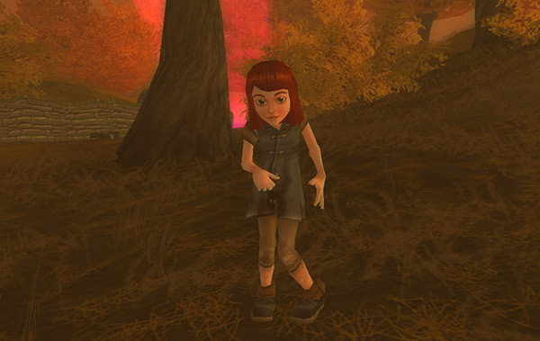
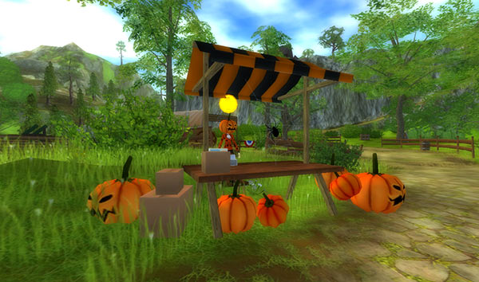
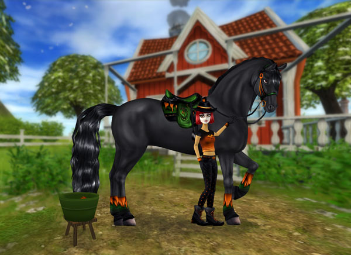
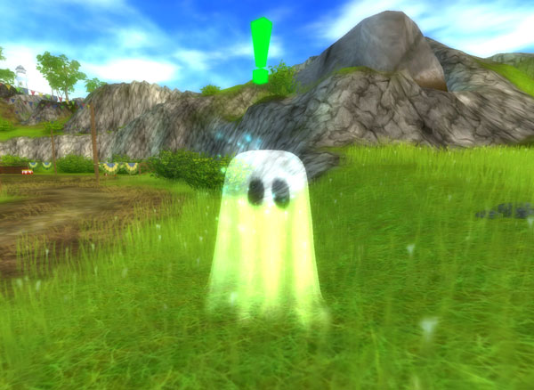

Hey hey Halloween homies! Welcome to this week’s update!
Don’t Go into the Forest...
It’s not safe anymore in Goldenleaf Forest. At least not when she is there. Last year’s popular (and super scary) Halloween quest is back for everyone who didn’t get a chance to play last year!

Rob and Bob have been on another of their seafaring adventures and have brought something back from their travels that isn’t quite what it seems. Head over to our pirate pals and see what terrors they have in store for you...
To get started with this quest, you need to be a Star Rider and have completed the quest where you help Bob out of the water after he’s fallen in. If you completed this quest last year, you won’t be able to do it again.
Terrifyingly Fun Halloween Clothes!
Now’s the chance to get totally dressed up for Halloween! A whole bunch of bloodcurdlingly awesome new styles are available to check out the new pop-up Halloween stores all over Jorvik! They’ve got some spine-chilling surprises in store.

You’ll also find some new clothing items over at the Mall so hop on the bus and see what’s on offer.
Hair-Raising Amazing Makeup!
To match your Halloween outfit, why not check out the salons, where you’ll find some monstrous makeup to give yourself that supernaturally sensational Halloween look!
Ghoulishly Fun Apple-Bobbing
All over Jorvik, the islanders are getting ready for frighteningly fun bobbing for apples! In a range of different locations, you’ll get the chance to play the traditional Halloween game of grabbing an apple with your teeth from a barrel full of water, and guess what? There’s prizes! It’s our ghostly guarantee that these prizes are scarily awesome!

The special prizes will be in a different location each day, so get exploring and find those Halloween giveaways!
Gruesome, Ghostly Goings-on!
Sadly, Ghostbusters don’t have an office on Jorvik so it’s up to you to track down the scary spooks that have taken over the island. You’ll find these frightful phantoms in all kinds of hidden corners of Jorvik, and you’ll only be able to work out where they are by listening carefully for their spooky noises...

Once you hear them, you’ll have to try and find them! They stay invisible until you get close enough, then BOO! They’re right in front of you. Once you’ve found the little creepers, you’ll bag yourself a gorgeous reward! This year’s rewards in the Halloween quests are all brand new!
To get started on this ghostly task, talk to Mrs Holdsworth - she'll tell you what to do!
Horse Market
Eddie and Ferdinand are ready for a week of horse market action over at Cape West Fishing Village. Eddie tells us that she hopes the horses won’t get too spooked!
What’s That in the Dark?
The legend of Galloper Thompson is well known all over Jorvik, and has been terrifying kids and adults alike every Halloween for many, many years. Different versions of who – or what – Galloper Thompson is are flying around all over the place at this time of year, and nobody really knows the truth.
Poems and stories about Thompson are everywhere, and these scary tales terrify the islanders and their horses. But hey, they’re just silly ghost stories, right?
...
Right?
Warning for players:
This Halloween update is heaps of fun and some aspects can be pretty nerve-racking at times, but certain parts of certain stories could possibly be genuinely scary for some of our younger players. If scary stories make you nervous, then it’s fine to ask someone at home to hang out with you while you play through the Halloween stuff, and don’t forget to be prepared for the occasional jump scare every so often! Remember, it’s all just a game :)